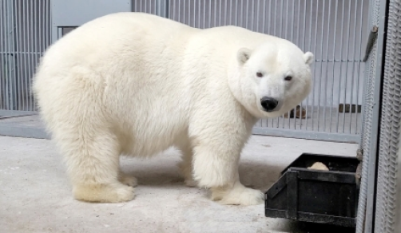
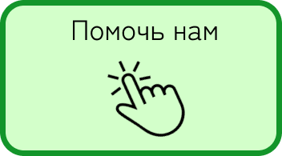
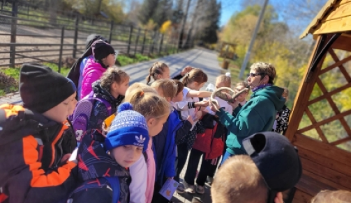
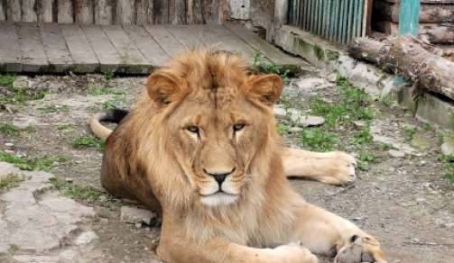

Белый медведь приехал в зоопарк
В наш зоопарк приехал новый житель!

В самом сердце нашего живописного города расположился зоопарк «Зверополис» — место, где реальность встречается с природной гармонией, а каждое животное имеет возможность рассказывать свою уникальную историю. Мы рады представить вам нашу историю, полную вдохновения, стремления и упорного труда, который позволил нам создать этот удивительный уголок дикой природы.
Зверополис начал свой путь двадцать лет назад с маленькой идеи и великой мечты: создать пространство, где животные и люди могут сосуществовать в гармонии, а каждый гость сможет узнать больше о мире дикой природы. От самого начала мы ориентировались на заботу о животных. Мы убеждены, что каждый житель нашего зоопарка заслуживает уважительного обращения и наилучших условий жизни.
Постепенно, с каждым годом, мы расширяли наш зоопарк, привлекая внимание к проблемам охраны окружающей среды и местам обитания животных. Мы начали с небольших вольеров и нескольких основных видов животных, но быстро поняли, что можем сделать гораздо больше. Благодаря поддержке наших посетителей, спонсоров и партнеров, Зверополис стал настоящим заповедником уникальных видов со всего мира.
Сегодня Зверополис — это не просто зоопарк, а целая экосистема, в которой тысячи животных живут в условиях, максимально приближенных к их естественной среде обитания. У нас вы найдете зоны, посвященные тропическим лесам, саваннам, арктическим ландшафтам и многим другим экосистемам, каждая из которых является домом для её уникальных обитателей.
Но Зверополис — это не только место для наблюдения. Мы предлагаем множество образовательных программ для детей и взрослых, где вы сможете узнать больше о жизни животных и причинах их исчезновения. Наши эксперты регулярно проводят мастер-классы, лекции и специальные мероприятия, направленные на повышение осведомленности о важности сохранения природного наследия.
С каждым новым шагом мы стремимся к устойчивому развитию. Зверополис активно внедряет экологические инициативы: использование возобновляемых источников энергии, программы по утилизации отходов и создание зеленых зон для отдыха наших гостей. Мы верим, что каждый из нас способен внести свой вклад в защиту природы, и поэтому поощряем всех наших посетителей следовать этим принципам и за пределами нашего зоопарка.
В Зверополисе мы создаем магию, которая соединяет людей и природу. Каждый раз, когда вы посещаете наш зоопарк, вы становитесь частью этой истории. Мы приглашаем вас открыть для себя увлекательный мир дикой природы, насладиться общением с нашими обитателями и стать защитником тех, кто не может говорить за себя. Вместе мы можем создать лучшее будущее для всех, кто разделяет нашу планету.
Приходите в Зверополис — открывайте сердце дикой природы!
Вход в зоопарк прекращается за час до закрытия

В наш зоопарк приехал новый житель!

Если вы желаете разнообразить учебный процесс, сотрудники зоопарка будут рады вам помочь.

Как озадачить львёнка? Очень просто — спрятать мясо в мешок.